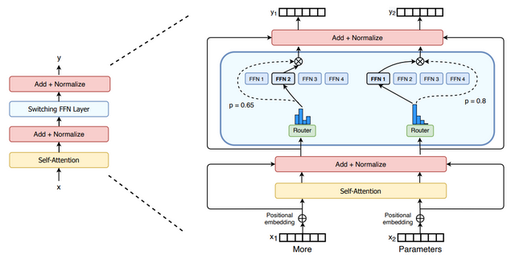

Mixture of Experts (MoE)
Mixture of Experts (MoE) is a neural network architecture that aims to divide complex problems into specialized tasks handled by different expert models.
A gating network dynamically selects and combines the outputs of these experts based on input data, allowing the model to allocate computational resources efficiently.
Active parameters is a metric that refers to the number of parameters that are actively used during the processing of a single token.
MoEs:
- ✅ Are pretrained much faster vs. dense models
- ✅ Have faster inference compared to models with same number of parameters
- ❌ Require more VRAM (since all experts are loaded in memory)
- ❌ Face more challenges in fine-tuning
Examples
- Mixtral 8x7B: MoE model that has 47B parameters.
The 2 Main Elements of an MoE
Sparse MoE layers
- used instead of dense feed-forward network (FFN) layers.
- MoE layers have a certain number of "experts" (e.g. 8)
- Each expert is a neural network
- Experts are FFNs, complex networks or MoEs themselves (i.e. hierarchical MoEs)
A gate network or router
- Determines which tokens are sent to which expert.
- Composed of learned parameters and is pretrained with the rest of the network
- E.g., token "More" is sent to 2nd expert, token "Parameters" sent to 1st.
- A token can be sent to more than one expert.
- How to route tokens is an important design decision

Figure 1: We replace the dense feed forward network (FFN) layer present in the Transformer with a sparse Switch FFN layer (light blue). The layer operates independently on the tokens in the sequence. We diagram two tokens (z; = “More” and z, = “Parameters” below) being routed (solid lines) across four FFN experts, where the router independently routes each token. The switch FFN layer returns the output of the selected FFN multiplied by the router gate value (dotted-line).